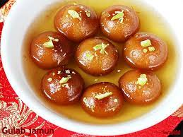

Gulab Jamun

What is Gulab Jamun?
Gulab jamun is a milk-solid-based sweet, originating in India and a type of mithai
popular in India, Nepal,
Pakistan, the Maldives, and Bangladesh, as well as Myanmar. It is also declared as the national dessert of
Pakistan officially by Government of Pakistan.
Ingredients
- 1 cup dry milk powder
- 3 tablespoons all-purpose flour
- 2 tablespoons ghee (clarified butter), melted
- ½ teaspoon baking powder
- ½ cup warm milk
Steps to make
- In a large bowl, stir together the milk powder, flour, baking powder, and cardamom. Stir in the almonds,
pistachios and golden raisins. Mix in the melted ghee, then pour in the milk, and continue to mix until
well blended. Cover and let rest for 20 minutes.
- In a large skillet, stir together the sugar, water, rose water and a pinch of cardamom. Bring to a boil,
and simmer for just a minute. Set aside.
- Fill a large heavy skillet halfway with oil. Heat over medium heat for at least 5 minutes. Knead the
dough, and form into about 20 small balls. Reduce the heat of the oil to low, and fry the balls in one
or two batches. After about 5 minutes, they will start to float, and expand to twice their original
size, but the color will not change much. After the jamun float, increase the heat to medium, and turn
them frequently until light golden. Remove from the oil to paper towels using a slotted spoon, and allow
to cool. Drain on paper towels and allow to cool slightly.
- Place the balls into the skillet with the syrup. Simmer over medium heat for about 5 minutes, squeezing
them gently to soak up the syrup. Serve immediately, or chill.
Back to Top
Back to Main Menu